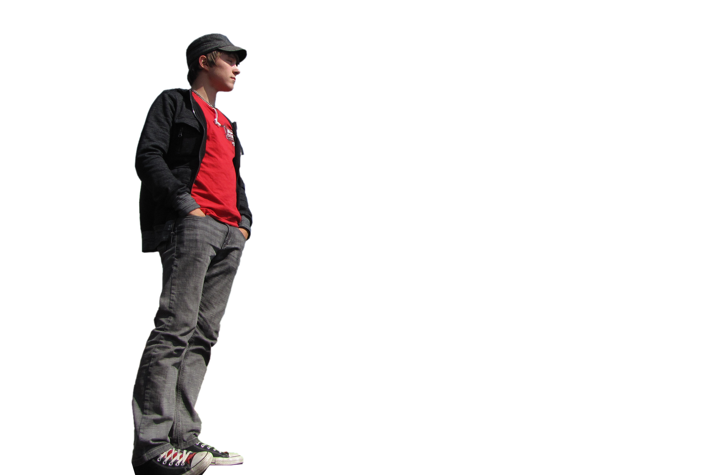
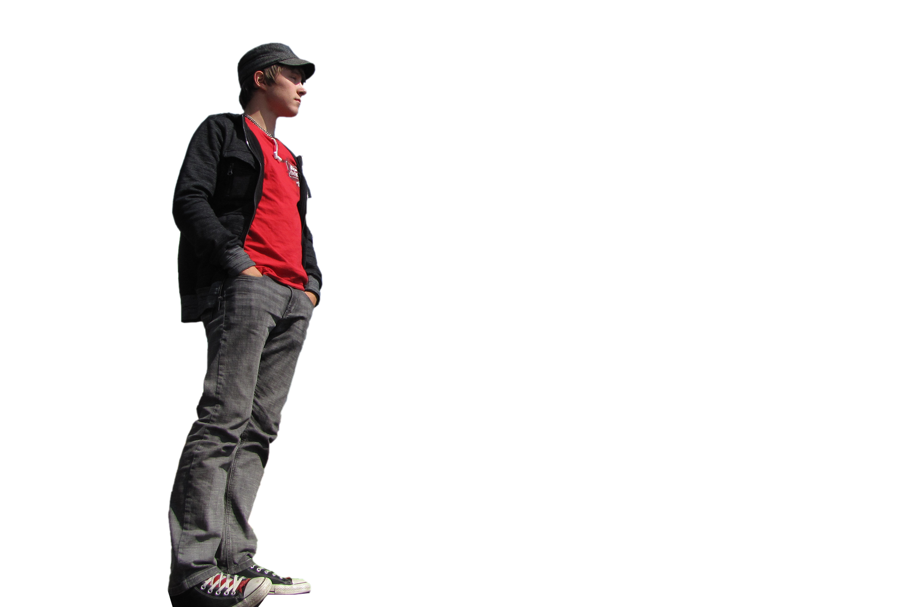
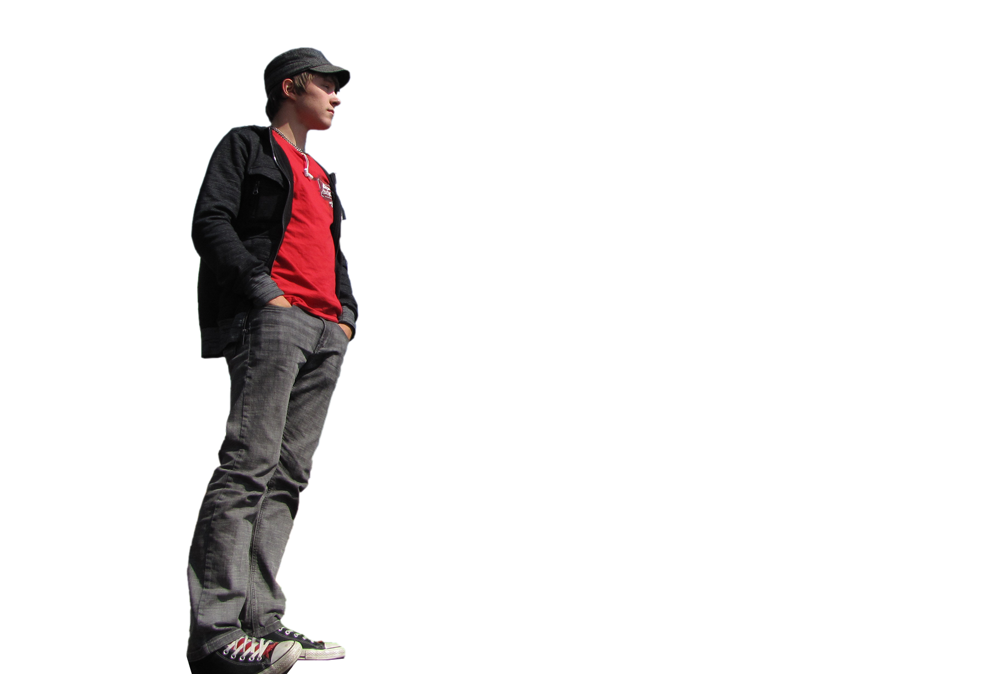

Salutations...
I'm Ryan, and this site is under construction.
Come back later! Or email me: MaskellRyan@me.com

I'm Ryan, and this site is under construction.
Come back later! Or email me: MaskellRyan@me.com
Explain how I love everything and how I become passionate about things that I think are cool and then try and tell everyone about them.
Words on how I view the world, my philiosphies, and why I get out of bed in the morning. Basically what I care about most.
Things about my education, training, and how I became a graphic & web designer. How it is my passion and my true calling.
Stuff about my Career, goals, links to MaskellMedia, and a breif overview of my accomplishments and current status.